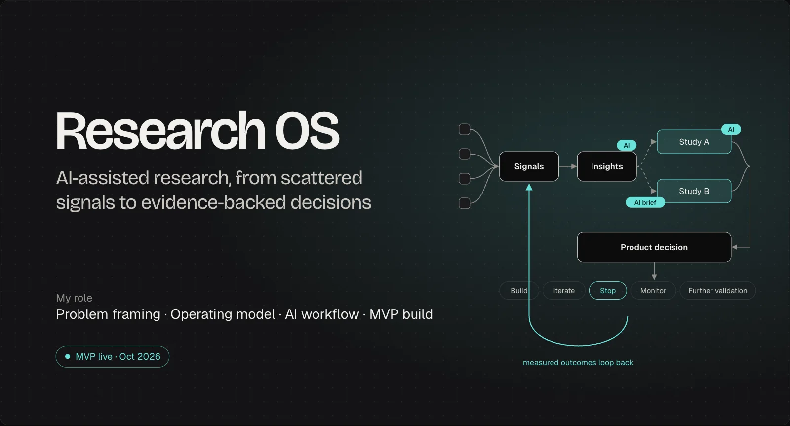
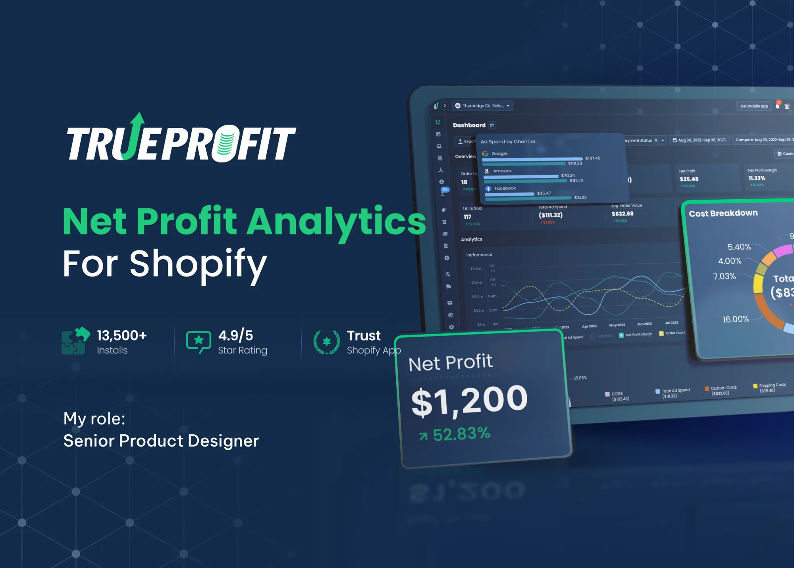
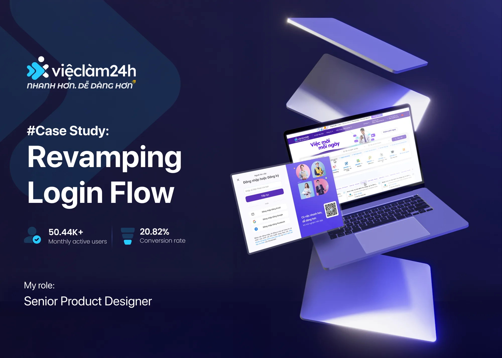
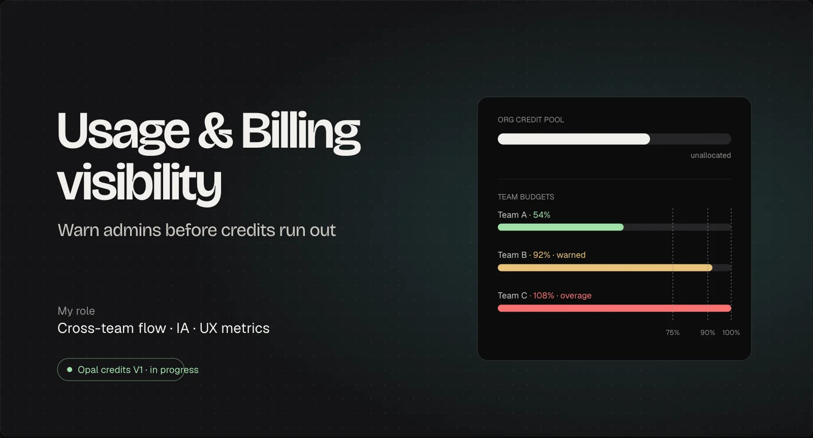
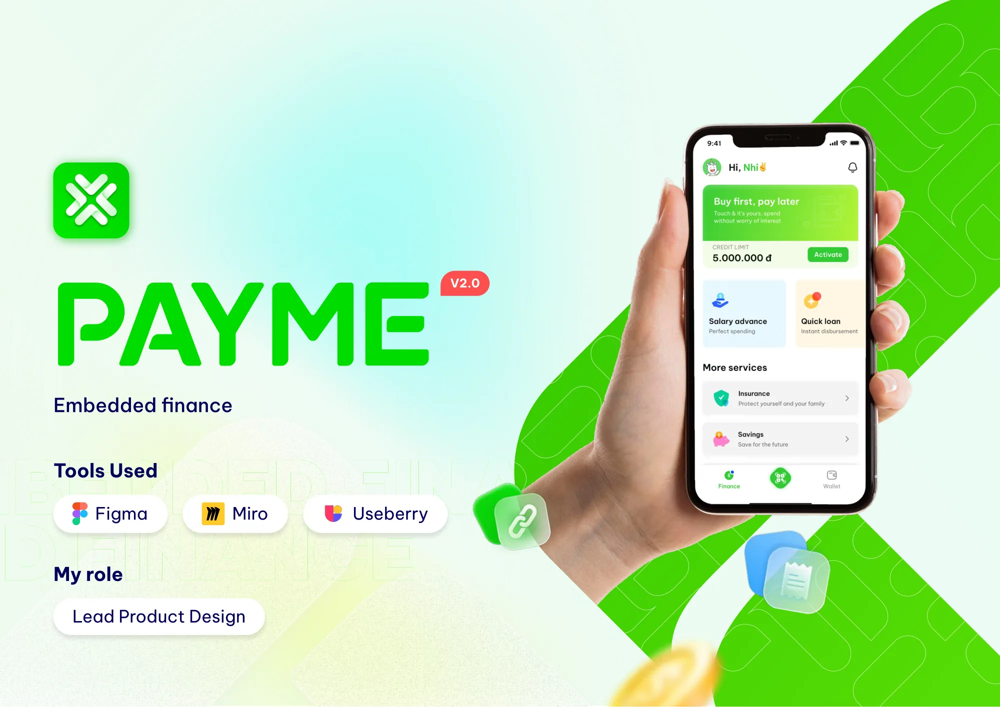
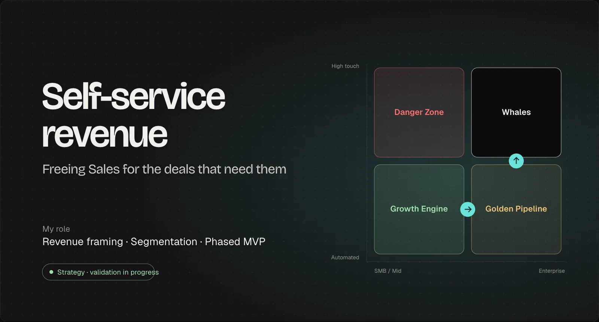
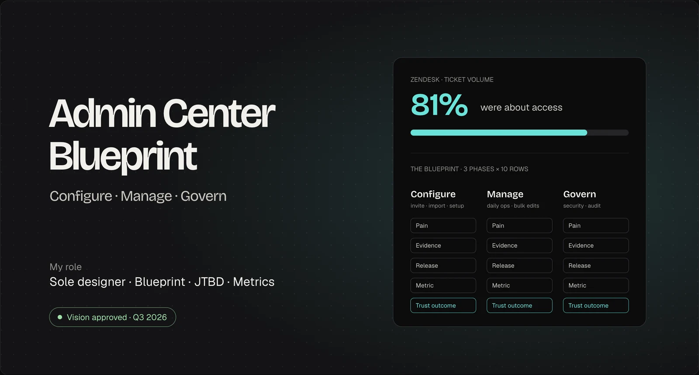
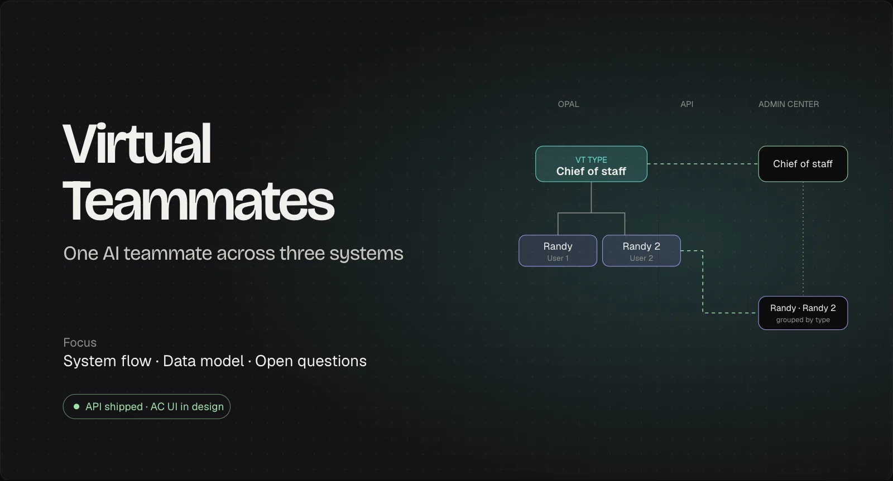

All work · 9 case studies
AI platforms, SaaS, fintech, job platforms and healthcare. Optimizely cases are under NDA and password protected; email me for access.
-

01 Research OSPasswordAn AI-assisted path from scattered signals to evidence-backed product decisions. I coded the MVP. MVPlive since Oct 2026 -

02 TrueProfitRedesigning shipping and COGS settings for a profit analytics app on Shopify. 8→4.3 minsetup time -

03 Vieclam24hRevamping the login flow for a job platform with 50K monthly users. +5%job applications in a month -

04 Usage & Billing visibilityPasswordTeam credit budgets and 75 · 90 · 100% warnings, so admins act before credits run out. 2UX metrics defined upfront -

05 PayMELeading the design of an embedded finance e-wallet with bank partners. 3usability fixes before release -

06 Self-service revenuePasswordA phased path from Sales-gated upgrades to self-service, gated by intent data at each step. 3phases, each gated by a metric -

07 Admin Center BlueprintPasswordAccess was 81% of tickets. An experience blueprint linking each access pain to evidence, a release and a metric. 81%of tickets were access -

08 Virtual TeammatesPasswordOne AI teammate across Opal, the API and Admin Center. I helped make the systems fit together. API ✓enablement shipped - 09 BewellTurning a telehealth app into a family doctor service for caregivers. 20caregiver interviews